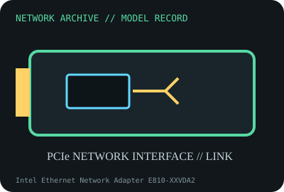

[ MODEL-SPECIFIC NETWORK HARDWARE RECORD ]
Intel Ethernet Network Adapter E810-XXVDA2
Dual-port SFP28 server NIC for 25/10/1GbE networking. Specifications are tied to this named product; confirm the physical label, revision and source documentation.

IDENTIFICATION: Verify exact PID/model, revision, label and host support. The catalog separates nominal PHY/link specifications from measured throughput; no benchmark is asserted unless explicitly recorded.
Model-specific specifications and compatibility
| Subcategory | 10 Gigabit and server adapters |
|---|---|
| Exact product/model | Intel Ethernet Network Adapter E810-XXVDA2 |
| Bus, ports and physical interface | PCI Express 4.0 x8 (16 GT/s); dual SFP28 cages; accepts supported DAC, AOC and optical modules. |
| PHY, radio or optical interface | Intel Ethernet Controller E810; manufacturer lists dual ports and 25/10/1GbE per port. Media support depends on supported SFP28 module/cable and firmware. |
| Nominal rate (not measured) | Up to 25 Gb/s per port; 50 Gb/s summed nominal line capacity across two ports, not a measured application rate. PCIe 4.0 x8 and host configuration bound total traffic. |
| Measured throughput | No measured throughput result is claimed for a physical specimen. Record adapter P/N, module/DAC, firmware, PCIe link, host, switch and traffic method. |
| Driver, OS and firmware | Intel documents the E810 Linux ice driver and Windows Server packages for supported releases; NVM/firmware and DDP profiles must match board/OEM release notes. RDMA capabilities require compatible software and configuration. |
| Platform/media compatibility | Requires a PCIe 4.0 x8-capable slot for full host bandwidth, airflow and modules supported by Intel/OEM. Confirm the adapter label and transceiver qualification; breakout/AOC support is media-specific. |
| Variant warning | E810-XXVDA2 is dual SFP28 25/10/1GbE, not E810-CQDA2 QSFP28 100GbE or a different E810 board. Retail/OEM board P/N, NVM, PSID and qualified optics vary. |
Revision, operation and measurement notes
E810-XXVDA2 is dual SFP28 25/10/1GbE, not E810-CQDA2 QSFP28 100GbE or a different E810 board. Retail/OEM board P/N, NVM, PSID and qualified optics vary.
Intel documents the E810 Linux ice driver and Windows Server packages for supported releases; NVM/firmware and DDP profiles must match board/OEM release notes. RDMA capabilities require compatible software and configuration.
No measured throughput result is claimed for a physical specimen. Record adapter P/N, module/DAC, firmware, PCIe link, host, switch and traffic method.
Archival, ESD and preservation notes
Record Intel product code, board/PBA, NVM, firmware, PSID, MACs and optics. ESD bag when uninstalled; cap optical cages/modules and follow fiber eye-safety precautions.
Retain source provenance and the revision/date of each supporting document. Store public records without credentials, personal information or other secrets.
Primary manufacturer and standards sources
- Intel E810-XXVDA2 product specificationsPrimary manufacturer or standards reference; confirm exact part label, revision, and platform qualification.
- Intel Ethernet adapter software and driversPrimary manufacturer or standards reference; confirm exact part label, revision, and platform qualification.
- IEEE 802.3 Ethernet standardsPrimary manufacturer or standards reference; confirm exact part label, revision, and platform qualification.
Manufacturer source links are provided for the stated model or exact product family; use the board label and the official revision-specific compatibility list for final qualification.